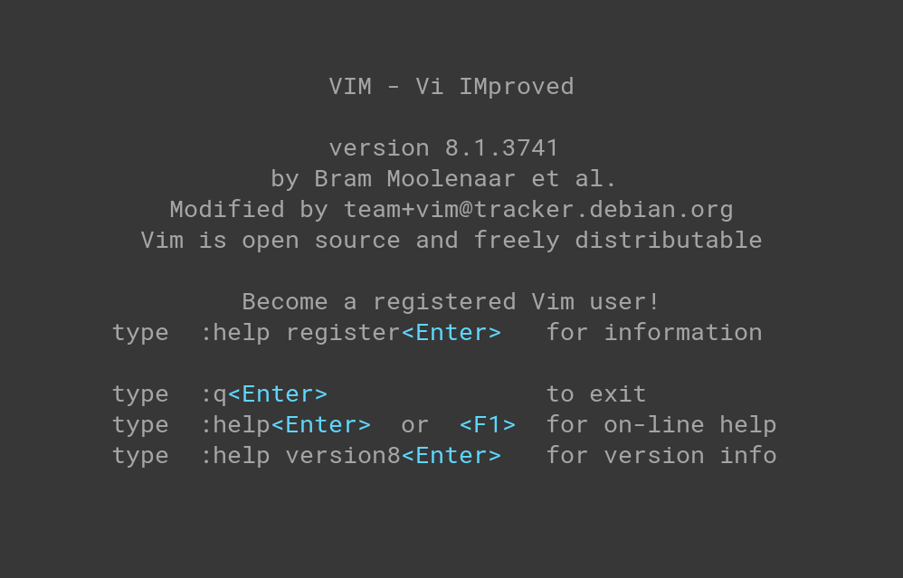
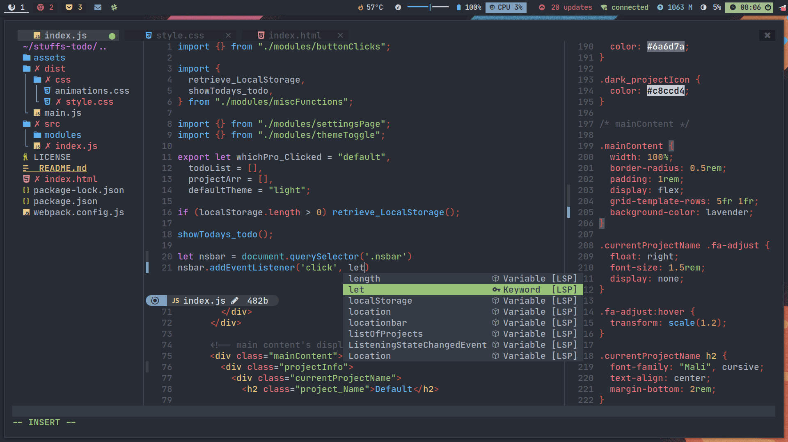

Dominik Juričić
21. November 2024
Samo kukavice koriste nano
Vim (Vi IMproved) je napredni tekstualni editor koji se koristi za uređivanje tekstualnih datoteka direktno u terminalu.
Primjer vanilla Vim sucelja 
Primjer uredenog NeoVim (moderna verzija Vima) sucelja 
Više-manje svaka Linux distribucija u svom standardnom repozitoriju
sadrži vim paket. Dovoljno je samo pokrenuti komandu:
apt install vim za distribucije bazirane na Debian
Linuxu.
Ovo je malo kompleksniji proces za koji ce vam najviše pomoči Bill Gates.
vim datoteka.txti da počnete unositi tekst.:w.:q.i za unos teksta na trenutnom kursoru ili
a da počnete unos nakon kursora.d pa zatim w da obrišete trenutnu
riječ.yy za kopiranje trenutne linije.p da zalijepite tekst nakon kursora..vimrc konfiguracije i dodataka.Vim je moćan alat za korisnike koji su spremni uložiti vrijeme u njegovo savladavanje. Idealan je za one koji traže brzinu, prilagodljivost i minimalistički alat za uređivanje teksta. Međutim, početnicima može biti izazovan zbog svoje složenosti i terminalskog sučelja.
Hvala na paznji!